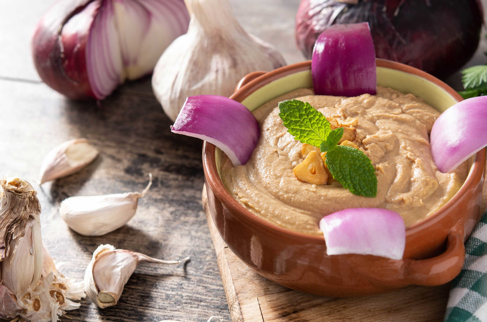
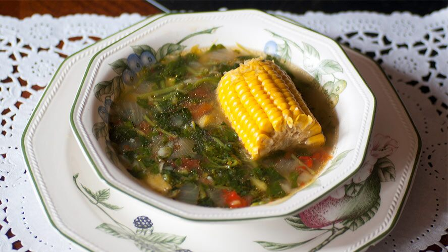
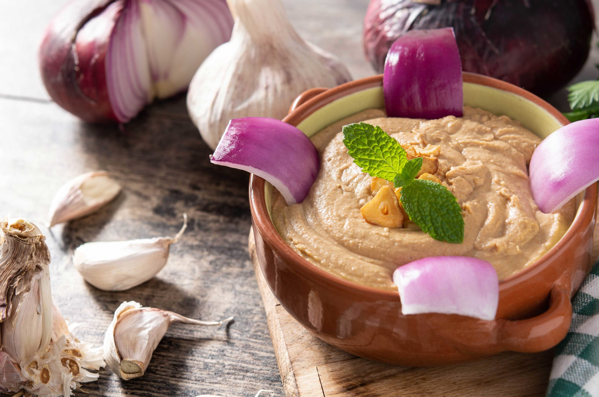
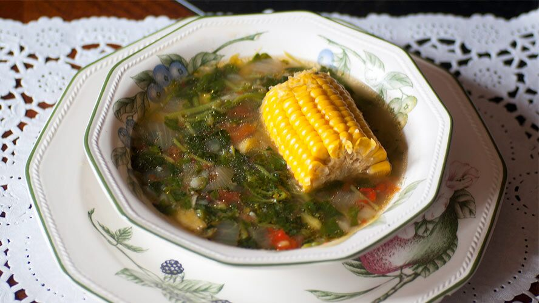

Platos típicos
En las Islas Canarias hay una gran diversidad de locales en los que disfrutar de los mejores platos de la
gastronomía local. Desde chiringuitos a pie de playa en los que degustar lo mejor del mar,
a restaurantes con estrella Michelin donde descubrir nuevos y sofisticados sabores.
Las islas Canarias son un archipiélago volcánico conocido por sus hermosas playas de arena negra y dorada.
Es un paraíso gastronómico cuyos platos exquisitos te harán soñar, entre los que podemos destacar las papas
arrugadas y la deliciosa salsa mojo.
La diversidad es el principal valor de la cocina típica de Gran Canaria. Algo que se refleja tanto en las
técnicas culinarias como en las combinaciones de ingredientes. También en el gusto por la abundancia de comida
sobre la mesa, de la que es materialmente imposible levantarse con hambre.
 



 Calle Ctra. al Puerto de Las Nieves
Calle Ctra. al Puerto de Las Nieves
 928898000
928898000